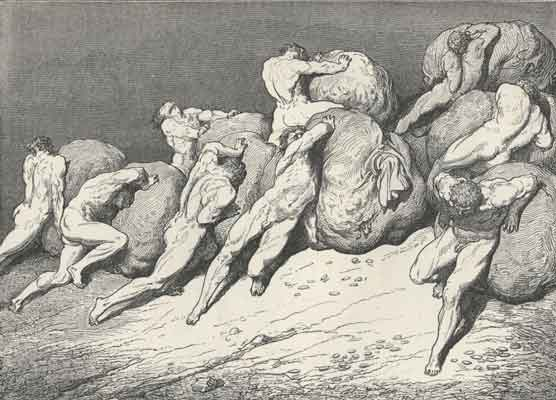

Daryush "Roosh" Valizadeh created ROK in October 2012. You can visit his blog at RooshV.com or follow him on Twitter and Facebook.


On Christmas Day I spent time with four of my male cousins, ranging in age from 15 to 24. While I’m not quite their mentor, they are receptive to lessons I give them. With any man I talk to, I try to identify where he is in life and what his unique situation is to give advice that I think will help him reach his next goal. This year, however, I had trouble giving much in the way of advice or motivation.
The reason is because most roads today lead to dead ends, and I know this because I’ve pursued most of them. A man eventually gets spit out not that much farther from where he began.
Pursuing external experiences, objects, or sex with beautiful women made me joyous but only for a short period of time, and then I returned back to the same emotional level. Was it all a waste? Was it all for vanity? Whatever the answer, I surely can’t advise my young cousins to pursue hedonism, of banging hoes around the world for no other reason than to bang hoes, if it will fail to give them a lasting form of contentment. Instead, I could advise them to search for deeper meaning in life.
These are better options, perhaps, but the times we live in will make them difficult to pursue. A God-fearing man would have to build high walls against the never-ending barrage of degenerate messages and sinful temptation that surround him. Raising a big family would provide a man with meaning as long as his wife didn’t take advantage of laws that encourage her to destroy the family and make the man financially destitute, and as long as the state doesn’t interfere in the raising of his children. Giving to others brings joy, as I can personally vouch for, but who exactly do you give to when your neighbor is from Somalia or Guatemala, and who may not even speak English, or when you’re actively being displaced and marginalized by your own government?

With concerted efforts to destroy God, family, tribe, and nation, my cousins will find it a great challenge to encounter a meaningful path, especially since they were programmed from a young age to be weak, victimized, feminine, dependent, collectivist, and fearful. I have no doubt that they can transcend that programming, but I’m sure you agree with me that the path to self-awareness and independence has become difficult and dark in a way that it wasn’t for men of the past. My cousins will be isolated and attacked along their path. They’ll receive no mainstream support. Is this the road I want to send them down, a life of truth but filled with constant battle and vigilance?
In the modern age, a life of meaning for men is impossible to achieve without also having to perpetually fight. It will take the mentality of a warrior to defeat the forces that want to hold us back today, and I wouldn’t put any man in this fight unless it’s a fight that he wants. So this Christmas, I didn’t give much guidance to my cousins. I gave practical advice, but nothing substantial or revolutionary, because I know that unless a man believes deep in his soul that hope and meaning is out there, that a good future can be made for him, there is little that can be done. I’ll keep an eye on them and see how they develop, but wait for them to come to me with a decision that they much rather take the far more difficult path.
 If you like this article and are concerned about the future of the Western world, check out Roosh's book Free Speech Isn't Free. It gives an inside look to how the globalist establishment is attempting to marginalize masculine men with a leftist agenda that promotes censorship, feminism, and sterility. It also shares key knowledge and tools that you can use to defend yourself against social justice attacks. Click here to learn more about the book. Your support will help maintain our operation.
If you like this article and are concerned about the future of the Western world, check out Roosh's book Free Speech Isn't Free. It gives an inside look to how the globalist establishment is attempting to marginalize masculine men with a leftist agenda that promotes censorship, feminism, and sterility. It also shares key knowledge and tools that you can use to defend yourself against social justice attacks. Click here to learn more about the book. Your support will help maintain our operation.
This article was originally published on Roosh V.
Read Next: Don’t Tell A Man What Type Of Woman He Should Be Attracted To